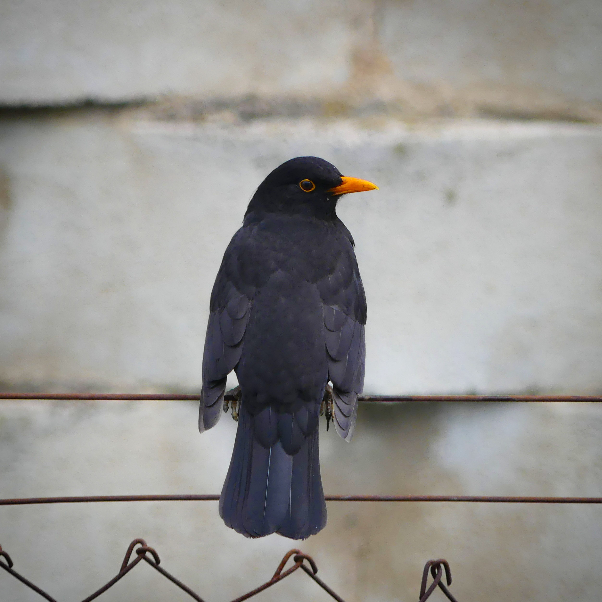

Turdus merula — دليل التعرّف والموائل والتكاثر والحضور في العالم العربي
الهوية والتعرّف
الشحرور الشائع Turdus merula طائر من فصيلة السمنيات Turdidae، يبلغ طوله نحو 24–25 سم. الذكر البالغ أسود، غالباً بمنقار أصفر أو برتقالي وحلقة عين صفراء. الأنثى بنية، بحلق أفتح ونقش خفيف على الصدر، واليافع بني منقّط ولا يصح اعتباره أنثى بمجرد اللون. وقد يحتفظ الذكر الفتي بمنقار داكن وريش أجنحة بني نسبياً. الذيل طويل مقارنة بذيل الزرزور، والطائر يتحرك على الأرض بقفزات أو جري قصير تتخلله وقفات.
الأنواع المشابهة والتصنيف
يمتاز الشحرور المطوق عادة بهلال صدري فاتح وحواف ريش تمنح الجناح مظهراً أفتح؛ ويجب الانتباه إلى الأفراد الفتية التي يضعف فيها الهلال. الزرزور أقصر ذيلاً ومدبب الجناحين. تشمل هذه المعالجة شحرور شمال أفريقيا ضمن Turdus merula؛ ولا تحوّل اختلافات تحت الأنواع إلى أنواع مستقلة. أما الشحرور الهندي والتبتي والصيني، التي فُصلت في التصنيفات الحديثة، فلا تدخل هنا.
الموائل والغذاء والصوت
يستغل الغابات والشجيرات والبساتين والحدائق والمساحات الخضراء بالمدن، بشرط توافر غذاء أرضي وغطاء قريب. يقلب الأوراق ويبحث في التربة عن الديدان والحشرات ولافقاريات أخرى، ويأكل الثمار خصوصاً حين تتاح بكثرة. يتغير الغذاء بحسب رطوبة الأرض والفصل والموطن. له أغنية صفيرية غنية يؤديها غالباً من موضع مرتفع، ونداءات إنذار حادة تختلف بوضوح عن الغناء. يدافع عن نطاقه أثناء التكاثر، وقد تجتمع طيور متعددة حول مورد ثمار دون أن تكوّن مستعمرة تعشيش.
التكاثر ودورة الحياة
تبني الأنثى عشاً كأسياً متيناً من مواد نباتية، تقويه بالطين وتبطّنه بمواد أدق، داخل شجيرة أو شجرة أو موضع محمي. الحضنة المعتادة 3–4 بيضات، مع اختلاف العدد، والحضانة نحو 12–14 يوماً. يغذي الأبوان الفراخ التي تغادر العش بعد نحو أسبوعين. قد تتعدد الحضنات، ويستمر إطعام الفراخ بعد خروجها. وثقت دراسة مغربية التكاثر في بساتين التفاح والغطاء الخشبي المجاور بآيت عياش؛ وتدل مثل هذه الدراسات المحلية على ضرورة ربط التقويم بالموطن لا نقله آلياً من أوروبا.
الانتشار والمواسم العربية
الشحرور ليس مجرد زائر شتوي عربي. له جماعات مقيمة متكاثرة في المغرب والجزائر وتونس، وفي أجزاء من بلاد الشام وشمال العراق. في لبنان هو مقيم شائع، تنضم إليه أعداد أقل من المهاجرين والزوار بين منتصف أكتوبر ومنتصف مارس. وفي الأردن توضح المقارنة بين وادي فينان ومرتفعات دانا أثر الارتفاع: الأول يستقبل زواراً شتويين، والثانية تؤوي طيوراً مقيمة. وسُجل تكاثره في واحات مصرية، فلا تختزل حالته المصرية في الهجرة وحدها. أما سجلات قطر فهي نادرة، وتختلف عن مناطق الإقامة المتوسطية. عالمياً تتحرك بعض الجماعات الشمالية جنوباً في الخريف بينما تبقى جماعات أخرى، وقد يصل المهاجر إلى منطقة يقيم فيها شحرور محلي أصلاً.
الدور البيئي والحماية
يسهم في شبكات الغذاء باستهلاك اللافقاريات ونقل بذور بعض الثمار، ويغذي بدوره الجوارح ومفترسات أخرى. حالته العالمية «أقل إثارة للقلق»، مع تباين الاتجاهات محلياً. تشمل الضغوط إزالة الأسيجة والغطاء الأرضي والمبيدات والاصطدامات وافتراس القطط. الاحتفاظ بشجيرات كثيفة وفرشة أوراق آمنة وعدم إزعاج الأعشاش يساعد النوع، ولا يتعارض نجاحه في بعض المدن مع حساسية جماعات أخرى لتغير الموائل.
المراجع
BTO — BirdFacts: Blackbird
RSPB — Blackbird
Woodland Trust — Blackbird
Ramadan-Jaradi and colleagues — Updated checklist of the birds of Lebanon, 2020
University of Reading — Birds of Faynan, Past and Present
OSME — Region List 10.2, passerines
El Hassani and colleagues — Breeding Performances of the European Blackbird in Morocco, 2021
Djemadi and colleagues — Biometric data of North African Blackbird, 2019
BirdLife International — Algeria country species factsheet
الصورة: WikiPokos — CC0 1.0.